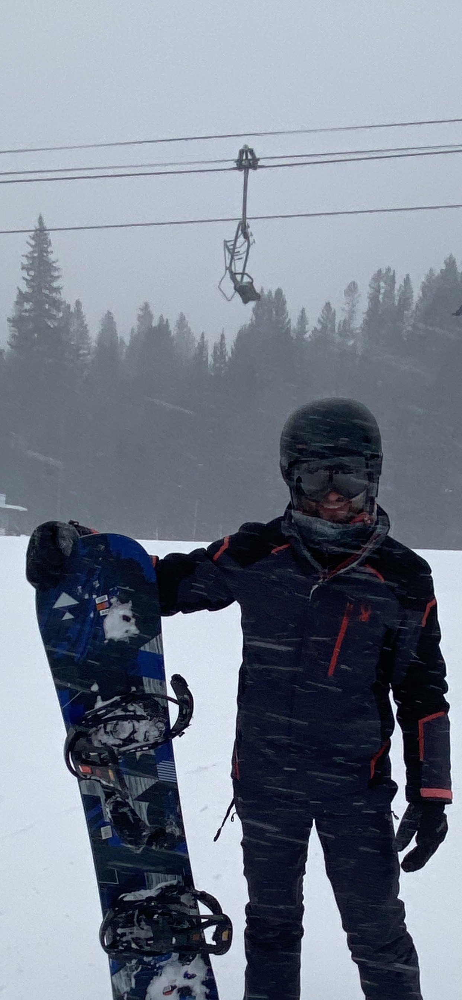

Introduction

Hello, my name is Matt Nicholson. I am a senior at KSU studying Computer Science
Origin
I'm from Woodstock, Georgia
About me
Hi, my name is Matt Nicholson and I am 24 years old.
For as long as I can remember I have always had an interest in technology. When I was 14, I received a smartphone and was amazed at how much I could do with something the size of a notepad. I ended up taking it apart to see how the internals operated but was clueless on how it worked and even more clueless on how to put it back together. It wasn’t long before I was doing the same thing on desktops and laptops.
Fast forward to today and I'm efficient at Java, C, Python, R Studio, and Jupyter. Some skills I am currently working on include Software QA, HTML, and CSS. I also try to keep up on various news and articles on data mining, AI, and machine learning. I'm never shy about learning new things and I'm always ready to conquer a new challenge.
Hobbies
- Snowboarding
- Working out
- Gaming